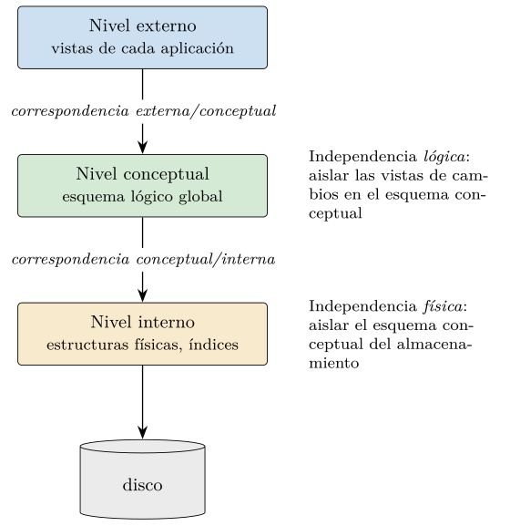
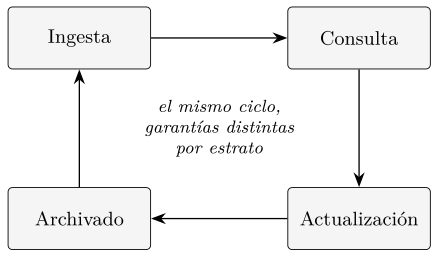
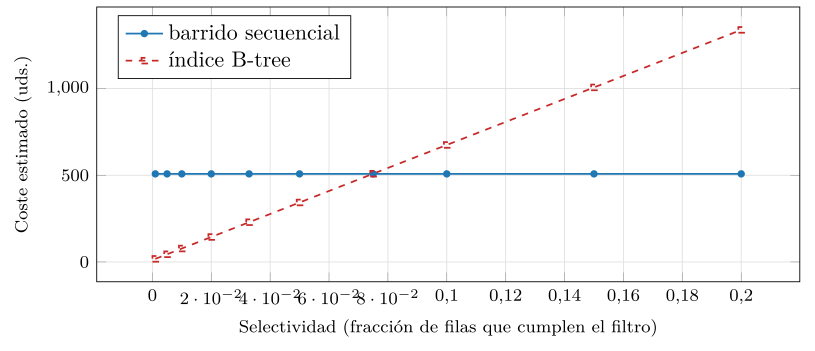

Capítulo 1. La persistencia y la disciplina de gestión de datos
Antes de cualquier modelo de datos, antes del álgebra relacional, de los índices o de los vectores densos que ocuparán la última parte de este libro, hay una pregunta más básica que toda esta disciplina intenta responder: cómo conservar un dato más allá de la ejecución del programa que lo produjo y cómo volver a encontrarlo después sin tener que recorrerlo entero. Es una pregunta engañosamente simple. Guardar un número en un fichero está al alcance de cualquier lenguaje en dos líneas. Pero guardar millones de hechos relacionados entre sí, dejar que decenas de programas los lean y los modifiquen a la vez sin corromperlos, garantizar que sobrevivan a un corte de corriente y, además, recuperarlos en milisegundos a partir de un criterio arbitrario, es un problema cuya solución ha articulado medio siglo de ingeniería y constituye el objeto de estudio de las bases de datos.
Este primer capítulo no presenta todavía ningún modelo de datos concreto. Su función es doble. Por un lado, plantea el problema —la persistencia gestionada— y muestra por qué el fichero plano, la respuesta ingenua, se vuelve insostenible en cuanto el dato deja de ser trivial. Por otro, fija el vocabulario y la arquitectura conceptual sobre la que se apoyará todo lo demás: la independencia entre el dato y la aplicación, la organización en tres niveles de la arquitectura ANSI/SPARC, y el ciclo de vida del dato que cada estrato posterior del libro reinterpretará a su manera. El capítulo cierra, además, fijando los convenios de notación que se mantendrán sin cambios hasta la última página, y poniendo en marcha un primer sistema gestor real para comprobar, sobre código que se ejecuta, que las ideas abstractas tienen una contrapartida tangible.
El hilo conceptual que recorre el libro entero asoma ya aquí. Toda la primera parte responde a la pregunta de qué datos coinciden con un criterio: el igual a del modelo relacional. Mucho más adelante, la recuperación vectorial sustituirá esa coincidencia exacta por la similitud, el cercano a. Pero ambos comparten un mismo sustrato: un sistema que persiste el dato, lo organiza y lo sirve con garantías. Ese sustrato es lo que se introduce a continuación.
Del fichero plano al sistema gestor
Un programa en ejecución mantiene sus datos en memoria principal: estructuras que viven mientras dura el proceso y desaparecen cuando termina. La memoria es rápida y cómoda, pero volátil. Cualquier dato que deba sobrevivir a la ejecución —el saldo de una cuenta, el historial clínico de un paciente, el catálogo de un comercio— tiene que escribirse en un soporte persistente, hoy casi siempre un disco de estado sólido o magnético. A esa propiedad, la de perdurar más allá del proceso que la crea, la llamamos persistencia.
La persistencia, por sí sola, es barata. Cualquier sistema operativo ofrece ficheros, y escribir bytes en un fichero conserva el dato indefinidamente. El problema no es, pues, conservar, sino gestionar lo conservado: estructurarlo de modo que distintas aplicaciones lo entiendan igual, consultarlo por criterios que no se previeron al guardarlo, modificarlo de forma concurrente sin pisarse, y recuperar la coherencia tras un fallo. La diferencia entre persistir y gestionar es la diferencia entre un cajón donde se amontonan papeles y un archivo documental con su catálogo, sus reglas de acceso y su procedimiento de copia. Este libro trata del segundo.
Conviene deslindar, ya de entrada, el sistema gestor de dos vecinos con los que se confunde. El sistema de ficheros del sistema operativo también persiste el dato y hasta lo organiza en carpetas; lo que no ofrece es un modelo con el que describir la estructura interna de cada fichero, ni un lenguaje para consultarlo por criterios arbitrarios, ni integridad, concurrencia o recuperación a nivel de registro. Una caché en memoria, en el otro extremo, ofrece acceso rapidísimo pero, por defecto, no es persistente: su contenido se evapora al apagar el proceso. La persistencia es, pues, la línea que separa la caché del sistema gestor, y la gestión estructurada la que separa el gestor del mero sistema de ficheros. La frontera no es siempre nítida —en la segunda parte veremos almacenes en memoria que añaden persistencia opcional, y sistemas de ficheros con cierta indexación—, pero el criterio es claro: persistir es necesario, gestionar es lo que define a una base de datos.
Supongamos que una pequeña biblioteca decide llevar su catálogo en un fichero de texto, una línea por obra, los campos separados por comas. Funciona el primer día. Los problemas aparecen al crecer, y conviene enumerarlos porque cada uno motivó, históricamente, una pieza del sistema gestor.
- Redundancia e inconsistencia.
-
Si el país de cada autor se repite en cada una de sus obras, corregirlo obliga a editar cientos de líneas; basta olvidar una para que el dato quede inconsistente, afirmando dos cosas a la vez. La redundancia no controlada es la fuente primera de la incoherencia.
- Dependencia entre programa y dato.
-
El formato del fichero —qué campo va en qué posición, con qué separador— queda codificado dentro de cada programa que lo lee. Añadir un campo obliga a reescribir todos esos programas. El dato y el código que lo interpreta están acoplados.
- Dificultad de acceso.
-
El fichero sabe responder a la consulta para la que se diseñó —recorrerlo de principio a fin— y a ninguna otra. «Dame las obras de geometría posteriores a 2010» exige escribir, a mano, un programa que recorra el fichero entero. Cada consulta nueva es un programa nuevo.
- Integridad.
-
Las reglas que el dato debe cumplir —un año entre 1450 y hoy, un identificador no repetido— viven, si acaso, dispersas en el código de validación de cada aplicación, y nada impide que un programa descuidado escriba un dato que las viole.
- Concurrencia.
-
Si dos bibliotecarios editan el fichero a la vez, la última escritura aplasta a la primera, o el fichero queda a medias. No hay ninguna noción de operación indivisible.
- Seguridad y recuperación.
-
No hay forma de conceder a un usuario el derecho a leer pero no a modificar, ni de garantizar que un corte de corriente a mitad de una escritura deje el catálogo en un estado coherente.
Ejemplo (Una anomalía de actualización). Supóngase que el catálogo plano almacena, en cada línea, la obra junto con los datos de su autor, con el formato titulo;anio;autor;pais. Si un autor ha publicado trescientas obras, su país aparece repetido trescientas veces. El día que se corrige el país de ese autor, hay que tocar las trescientas líneas en una sola operación: si el proceso se interrumpe a la mitad —un corte de corriente, un fallo del programa—, el catálogo afirmará que el mismo autor está en dos países a la vez. Esta es la anomalía de actualización, y su raíz —almacenar un mismo hecho más de una vez— es justamente lo que la normalización del capítulo 4 enseñará a evitar. Conviene subrayar que el sistema gestor no elimina la anomalía por sí solo: ofrece las herramientas —un esquema bien diseñado y la transacción atómica del capítulo 5— para que el diseñador la elimine con criterio.
Cada una de estas carencias tiene nombre propio en la literatura clásica (Silberschatz et al. 2019; Date 2001) y, lo que es más importante, cada una se corresponde con una función que el sistema gestor asumirá. La lista no es anecdótica: es, en negativo, el índice de servicios de un sistema gestor de bases de datos.
El sistema gestor de bases de datos
Un sistema gestor de bases de datos (SGBD) es el software que se interpone entre las aplicaciones y los datos persistentes, y que asume centralizadamente las funciones que el fichero plano dejaba a cada programa. En lugar de que cada aplicación conozca el formato físico del dato, todas hablan con el gestor en un lenguaje de alto nivel —en el caso relacional, SQL— y es el gestor quien traduce esas peticiones a operaciones sobre el almacenamiento.
Definición (Sistema gestor de bases de datos). Programa o conjunto de programas que media entre los usuarios y los datos persistentes, ofreciendo un modelo de datos con el que describirlos y consultarlos, y garantizando de forma centralizada su integridad, su acceso concurrente, su seguridad y su recuperación ante fallos.
La palabra clave es indirección. El gestor introduce un nivel intermedio entre lo que la aplicación pide y cómo se sirve. Esa indirección es la que permite, por ejemplo, que el administrador añada un índice para acelerar una consulta sin que ningún programa cambie: la consulta sigue expresada en los mismos términos lógicos, y el gestor decide, por debajo, si la resuelve recorriendo la tabla o consultando el índice. Veremos esta idea en funcionamiento al final del capítulo, y la reconoceremos como un caso de la independencia física que la sección 1.4 formaliza.
Conviene distinguir tres términos que el lenguaje corriente confunde. La base de datos es la colección de datos en sí. El sistema gestor es el software que la administra. El sistema de base de datos es el conjunto de ambos más las aplicaciones y los usuarios que lo rodean. A lo largo del libro, cuando hablemos de «la base» nos referiremos al dato, y cuando hablemos de «el gestor» o «el motor», al software.
Las funciones de un sistema gestor
Si invertimos la lista de carencias del fichero plano, obtenemos el catálogo de funciones que define a un sistema gestor maduro:
Un modelo y un lenguaje de datos. El gestor ofrece una forma abstracta de describir los datos —el modelo— y un lenguaje para definirlos y consultarlos. El modelo relacional y SQL ocuparán los capítulos 2 y 3.
Control de la redundancia. Mediante el diseño del esquema, el gestor permite almacenar cada hecho una sola vez; la normalización, objeto del capítulo 4, sistematiza ese control.
Independencia entre dato y aplicación. El núcleo de este capítulo, formalizado enseguida.
Integridad. El gestor hace cumplir, de forma declarativa, las reglas que el dato debe satisfacer: claves, tipos, restricciones.
Concurrencia y recuperación. El gestor coordina los accesos simultáneos y restaura un estado coherente tras un fallo; las transacciones del capítulo 5 son el mecanismo.
Seguridad. El gestor controla quién puede ver y modificar qué.
Este catálogo es estable: lo cumplen tanto un gestor relacional de los años ochenta como un motor vectorial actual, aunque cada uno relaje o refuerce distintas funciones. La segunda parte del libro mostrará sistemas que sacrifican parte de la integridad o de la consistencia a cambio de escala, y la entenderemos precisamente como un reparto distinto de este mismo conjunto de funciones, no como su abandono.
Alrededor de un sistema gestor conviven varios papeles humanos, y conviene distinguirlos porque cada uno opera, predominantemente, en uno de los tres niveles que la sección 1.5 formalizará. El administrador de la base (o DBA) gobierna el nivel interno: decide los índices, las copias de seguridad, los parámetros de rendimiento, los permisos de acceso; es quien, en la práctica del final del capítulo, crearía el índice que acelera la consulta. El diseñador de la base fija el esquema conceptual: qué tablas hay, qué atributos, qué claves y restricciones, una labor que el capítulo 4 sistematiza. El programador de aplicaciones escribe los programas que acceden al dato, normalmente a través de vistas del nivel externo, sin necesitar saber cómo se almacena. Y el usuario final consulta y actualiza el dato a través de esas aplicaciones, ajeno por completo a la maquinaria que hay debajo.
Esta división del trabajo es, en sí misma, un fruto de la independencia de datos: solo porque los niveles están desacoplados puede el administrador optimizar el almacenamiento sin coordinarse con cada programador, y puede el programador escribir su aplicación sin saber qué índices existen. Cuando, en la última parte del libro, aparezca el ingeniero que elige un modelo de embedding o ajusta los parámetros de un índice aproximado, lo reconoceremos como una especialización contemporánea del papel del administrador: las herramientas cambian, el lugar en la arquitectura no.
Una genealogía de los modelos de datos
El sistema gestor resuelve el problema de la persistencia gestionada, pero deja abierta una pregunta que define a cada familia de sistemas: ¿cómo se estructura el dato en el nivel conceptual? La historia de la disciplina es, en buena medida, la historia de las sucesivas respuestas a esa pregunta, y merece un repaso porque traza el mismo arco que recorre este libro.
Los primeros sistemas, en los años sesenta, organizaban el dato en jerarquías: el modelo jerárquico —cuyo exponente fue IMS— disponía los registros en forma de árbol, eficaz cuando los datos tenían una estructura naturalmente anidada, pero rígido en cuanto una consulta no seguía las ramas previstas. El modelo en red de CODASYL lo generalizó a un grafo de punteros entre registros, ganando flexibilidad a costa de una navegación explícita: el programa tenía que recorrer los enlaces a mano, registro a registro. Ambos modelos compartían un defecto que hoy llamaríamos falta de independencia: la consulta estaba entretejida con la estructura física de los punteros.
La ruptura llegó en 1970, cuando Codd propuso el modelo relacional (Codd 1970), que sustituyó la navegación por punteros por una descripción declarativa basada en la teoría de conjuntos: el usuario dice qué quiere, no cómo llegar a ello, y el gestor decide el camino. Esa separación entre el qué y el cómo es la encarnación más pura de la independencia física, y explica el dominio del modelo relacional durante medio siglo. Las décadas siguientes lo extendieron —tipos compuestos del modelo objeto-relacional, que el capítulo 3 retomará— sin alterar su núcleo declarativo. La segunda parte del libro narrará cómo la escala web tensionó ese modelo y dio lugar a las familias NoSQL, que relajan el esquema; y la cuarta, cómo la necesidad de buscar por parecido y no por igualdad introdujo el vector como tipo de dato y la similitud como operación de consulta. Esa última frontera la ha impulsado el aprendizaje profundo de la última década: los embeddings (Mikolov et al. 2013) —representaciones densas que capturan el significado, y objeto de la tercera parte— volvieron práctica la búsqueda por parecido, y su adopción se generalizó con los grandes modelos de lenguaje (Vaswani et al. 2017) y la recuperación aumentada (RAG) (Lewis et al. 2020), que recuperan por similitud el contexto con que alimentan al modelo. Cada modelo es, en el fondo, una respuesta distinta a la misma pregunta sobre el nivel conceptual; el problema de la persistencia que abre este capítulo permanece invariante bajo todos ellos.
Esquema e instancia
Hay una distinción que conviene fijar antes de seguir, porque sin ella las nociones de independencia y de nivel resultan resbaladizas: la diferencia entre el esquema y la instancia de una base de datos.
Definición (Esquema e instancia). El esquema es la descripción de la estructura de la base: qué tablas hay, qué atributos y de qué tipo, qué restricciones. La instancia (o estado) es el contenido concreto de la base en un instante dado: las filas que contiene ahora mismo.
La relación entre ambos es la que hay entre un molde y lo que se vacía en él. El esquema es relativamente estable: se fija al diseñar la base y cambia rara vez, en operaciones deliberadas que llamamos migraciones. La instancia, en cambio, cambia continuamente: cada inserción, cada borrado, cada actualización produce una instancia nueva. Una misma base atraviesa, a lo largo de su vida, millones de instancias bajo un único esquema. En la tradición lógica que el capítulo 2 retomará, al esquema se le llama la intensión de la relación, y a la instancia, su extensión: la primera dice qué puede contener; la segunda, qué contiene.
Esta distinción es la que da sentido preciso a la independencia de datos. Lo que la arquitectura de tres niveles separa no son tres bases, sino tres esquemas —interno, conceptual, externo— de una misma base. Y la independencia consiste en poder modificar un esquema sin tocar otro. Modificar un esquema no es lo mismo que modificar la instancia: añadir un atributo (cambio de esquema) es una operación rara y delicada; insertar una fila (cambio de instancia) es el pan de cada día. Toda la primera parte de este libro, al hablar de diseño y normalización, opera sobre el esquema; la práctica del final de este capítulo, al insertar veinte mil filas, opera sobre la instancia. Cuando lleguemos a las bases vectoriales, el esquema fijará la dimensión del vector y la métrica de distancia, mientras que la instancia será el conjunto de vectores almacenados en cada momento: la distinción, una vez más, sobrevive intacta al cambio de estrato.
Independencia física y lógica
La función más característica de un sistema gestor, y la que mejor lo distingue del fichero plano, es la independencia de datos: la capacidad de modificar la definición del dato en un nivel sin tener que alterar el nivel superior. Se presenta en dos grados.
Definición (Independencia física). Capacidad de modificar el esquema interno —la organización del dato en el almacenamiento, sus índices, su disposición en disco— sin que haya que modificar el esquema lógico ni, por tanto, las aplicaciones que lo usan.
Definición (Independencia lógica). Capacidad de modificar el esquema lógico —añadir un atributo, descomponer una tabla— sin que haya que modificar las vistas externas de las aplicaciones que no usan lo modificado.
La independencia física es la más fácil de lograr y la que más rendimiento aporta. Cuando un administrador crea un índice para acelerar una consulta frecuente, está cambiando el esquema interno: ahora el dato se puede alcanzar por un camino nuevo. Ninguna aplicación se entera, porque todas siguen pidiendo lo mismo en los mismos términos lógicos; es el gestor quien aprovecha el nuevo camino. La demostración práctica de la sección 1.10 es exactamente este caso: la misma consulta, dos caminos físicos.
La independencia lógica es más difícil, porque las aplicaciones sí dependen, por definición, de la estructura lógica que manipulan. El mecanismo que la hace posible es la vista: una relación derivada, definida sobre el esquema lógico, que presenta a cada aplicación solo la porción y la forma del dato que le concierne. Si el esquema lógico cambia de un modo que la vista puede absorber —reescribiéndose su definición sin cambiar lo que produce—, la aplicación que consume la vista no necesita tocarse.
Ambas formas de independencia son manifestaciones de un mismo principio de ingeniería, el de la separación en capas: cada nivel oculta sus detalles al nivel superior y le ofrece una interfaz estable. Ese principio, llevado a su expresión canónica en el mundo de las bases de datos, es la arquitectura de tres niveles que se describe a continuación.
La arquitectura ANSI/SPARC en tres niveles
En 1975, el comité ANSI/X3/SPARC propuso un marco de referencia para los sistemas gestores que ha sobrevivido, casi intacto, hasta hoy (Tsichritzis y Klug 1978). Su aportación fue separar la descripción del dato en tres niveles de abstracción, cada uno con su propio esquema, conectados por dos correspondencias. La figura 1.1 resume la arquitectura.

Los tres niveles
El nivel interno, o físico, describe cómo se almacena el dato realmente: la disposición de los registros en las páginas del disco, los métodos de acceso, los índices, la compresión. Es el nivel más cercano a la máquina y el que más cambia con la tecnología de almacenamiento. Un buen sistema gestor confina aquí todas las decisiones de rendimiento, de modo que puedan revisarse sin propagar el cambio hacia arriba.
Para entender qué decisiones se toman en este nivel conviene recordar la jerarquía de almacenamiento sobre la que descansa todo sistema gestor. La memoria principal es rápida —los accesos se miden en nanosegundos— pero volátil y limitada; el almacenamiento secundario, disco o memoria flash, es persistente y amplio, pero varios órdenes de magnitud más lento (Silberschatz et al. 2019). Ningún sistema que maneje más datos de los que caben en memoria puede ignorar esta asimetría: la persistencia exige el soporte lento, y servir consultas con agilidad exige el rápido, de modo que el gestor pasa la vida moviendo datos entre ambos.
A esta jerarquía clásica la nube le añade un peldaño que conviene nombrar ya, porque reaparecerá a lo largo del libro: el almacenamiento de objetos remoto y replicado. En él, el «disco» deja de ser un dispositivo local y pasa a ser un servicio accesible por red, donde un dato es duradero no porque viva en un soporte fiable, sino porque vive en muchas copias a la vez. Eso permite separar el cómputo del almacenamiento: la máquina que ejecuta las consultas y la que guarda los datos dejan de ser la misma, y cada una escala por su cuenta. Es más lento que un disco local —media una red—, pero a cambio resiste la pérdida de una máquina entera y crece sin límite práctico. La persistencia se vuelve, así, un problema de replicación y no de hardware; el capítulo 5 mostrará cómo eso redefine la durabilidad de las transacciones, y la segunda parte, cómo gobierna los sistemas distribuidos. Por ahora basta retener que «grabar en disco» es, en la nube, «grabar en suficientes copias remotas».
La consecuencia de diseño más importante es que la unidad de transferencia entre el disco y la memoria no es el byte ni la fila, sino el bloque o página: un trozo de tamaño fijo —8 KB en el PostgreSQL del repositorio, de 4 a 16 KB según el sistema— que se lee o escribe entero. El gestor no lee «una fila» del disco; lee la página que la contiene, con todas las filas vecinas. Esta granularidad explica por qué un barrido secuencial cuesta tanto —ha de traer a memoria todas las páginas de la tabla— y por qué un índice ahorra: permite traer solo las pocas páginas donde están las filas buscadas. Un área de memoria, la caché de páginas o buffer pool, retiene las páginas usadas recientemente para no releerlas del disco. Cuando, en la práctica del final del capítulo, pidamos al plan de ejecución que informe de los buffers, estaremos midiendo exactamente cuántas páginas tocó cada camino. Todo este mecanismo vive confinado en el nivel interno: las aplicaciones consultan filas y nunca mencionan páginas, porque la página es un detalle físico que la independencia mantiene oculto.
El nivel conceptual, o lógico, describe la estructura del conjunto completo de datos para la comunidad de usuarios, con independencia de cómo se almacenen. Es el nivel donde vive el esquema relacional: las tablas, sus atributos, sus claves y sus restricciones de integridad. Aquí se responde a la pregunta de qué datos hay y cómo se relacionan, sin entrar en cómo se guardan ni en cómo los ve cada aplicación. La mayor parte de este libro, y desde luego toda la teoría del modelo relacional, opera en este nivel.
El nivel externo comprende las distintas vistas: cada aplicación o grupo de usuarios percibe solo la parte del esquema conceptual que necesita, posiblemente reestructurada. El departamento de préstamos de la biblioteca ve las obras y sus ejemplares disponibles; el de adquisiciones ve las obras y sus proveedores. Ambas vistas se derivan del mismo esquema conceptual, pero ninguna lo expone entero. El nivel externo es, además, un instrumento de seguridad: lo que una vista no incluye, el usuario que solo accede a esa vista no puede verlo.
Las dos correspondencias
Entre los niveles median dos correspondencias o mappings. La correspondencia conceptual/interna dice cómo se materializa cada elemento lógico en el almacenamiento; revisarla sin tocar el nivel conceptual es, justamente, ejercer la independencia física. La correspondencia externa/conceptual dice cómo se deriva cada vista del esquema lógico; poder reescribirla cuando el esquema conceptual cambia, sin alterar la vista que la aplicación consume, es ejercer la independencia lógica.
La elegancia del marco está en que las dos formas de independencia que la sección anterior definió por separado se leen aquí como una propiedad de cada correspondencia: la independencia es la libertad de modificar un esquema manteniendo estable la correspondencia que lo conecta con el nivel superior. Esta es la razón de que un esquema mental de tres cajas y dos flechas baste para razonar sobre decisiones de diseño que, en la práctica, afectan a sistemas de millones de líneas.
Ejemplo (Una consulta a través de los tres niveles). Sigamos la petición «las obras de lógica posteriores a 2010» en su descenso por la arquitectura. En el nivel externo, la aplicación de catálogo la formula sobre su vista, que quizá llame «fondo disponible» a lo que el esquema conceptual conoce como la relación libro. La correspondencia externa/conceptual traduce la vista a esa relación. En el nivel conceptual, la consulta queda como una selección sobre libro con dos condiciones; aquí no hay aún ninguna noción de cómo se llega al dato. Es la correspondencia conceptual/interna la que, en el nivel interno, decide el camino físico: barrer todas las páginas de la tabla o, si existe el índice adecuado, consultarlo para leer solo unas pocas. El usuario que mira la pantalla no percibe nada de este descenso; ve aparecer las obras. Y, lo que es decisivo, si mañana el administrador crea un índice, solo cambia la última correspondencia: la vista, la consulta conceptual y la aplicación permanecen idénticas. La práctica de la sección 1.10 es, literalmente, este ejemplo ejecutándose.
Observación. Los motores que estudiaremos en la última parte del libro no abandonan esta arquitectura; la estiran. Una base de datos vectorial añade, en el nivel interno, un tipo nuevo de índice —los que el capítulo 15 detalla— y, en el conceptual, un tipo de dato nuevo, el vector. Pero la separación en niveles y la indirección que la sostiene siguen siendo las mismas. Reconocer esta continuidad es uno de los objetivos del libro.
El catálogo del sistema y los metadatos
Un sistema gestor no almacena solo los datos del usuario; almacena, además, la descripción de esos datos: los esquemas de los tres niveles, los tipos de cada atributo, las restricciones de integridad, los índices que existen, los permisos concedidos, e incluso estadísticas sobre la distribución de los valores. A ese «dato sobre el dato» lo llamamos metadato, y a la parte de la base que lo guarda, el catálogo del sistema o diccionario de datos.
Definición (Catálogo del sistema). Conjunto de metadatos que un sistema gestor mantiene para describirse a sí mismo: la definición de los esquemas, los tipos, las restricciones, los índices, los permisos y las estadísticas que el optimizador necesita.
La propiedad notable es que un sistema gestor es autodescriptivo: la información que necesita para interpretar el dato del usuario está dentro de la propia base. En un sistema relacional esto llega a su forma más elegante, porque el catálogo se almacena, a su vez, en tablas; consultarlo es consultar relaciones como cualquier otra. En PostgreSQL, por ejemplo, los esquemas estándar information_schema y pg_catalog exponen como tablas toda la estructura de la base, de modo que la misma sentencia que interroga los datos sirve para interrogar su descripción.
El catálogo no es un adorno: es lo que hace posible la indirección de la que hemos hablado. Cuando una aplicación pide una consulta, el gestor consulta el catálogo para saber qué tablas y atributos existen, qué tipos tienen y qué índices podría usar; cuando el administrador crea un índice, el hecho se registra en el catálogo, y a partir de ese momento el optimizador lo considera. La práctica del final del capítulo lo ilustra de un modo concreto: la orden ANALYZE que el código ejecuta tras poblar la tabla no toca ni una fila de datos del usuario; actualiza las estadísticas del catálogo —cuántas filas hay, cómo se distribuyen los valores de cada columna— para que el optimizador estime bien los costes. Sin esas estadísticas frescas, el gestor podría elegir mal el camino físico aun teniendo el índice disponible.
Esta idea reaparecerá, ampliada, en la cuarta parte. Cuando una base de datos vectorial almacene un vector, guardará en su catálogo su dimensión, la métrica de distancia asociada y el tipo de índice aproximado que lo cubre; son metadatos nuevos, pero cumplen la misma función que la longitud de una cadena o la existencia de un B-tree en el sistema relacional. El catálogo, como la arquitectura de tres niveles, es una de las piezas que el libro mostrará intactas de un extremo al otro.
El ciclo de vida del dato
Hay un último marco que conviene fijar desde el principio, porque organiza el recorrido del libro entero: el ciclo de vida del dato. Todo dato, en cualquier sistema, atraviesa cuatro etapas que se repiten (figura 1.2): la ingesta, por la que entra en el sistema; la consulta, por la que se recupera; la actualización, por la que cambia; y el archivado, por la que se retira del acceso corriente sin destruirse. No es un ciclo lineal con final, sino uno que se realimenta: el dato archivado puede reingresar, la consulta dispara actualizaciones, la actualización genera dato nuevo que ingerir.

La utilidad de este marco es que da una rejilla común para comparar sistemas que, a primera vista, no se parecen en nada. El estrato relacional de la primera parte responde al ciclo con las máximas garantías: la ingesta y la actualización son transaccionales, la consulta es exacta y declarativa. El estrato NoSQL de la segunda parte relaja deliberadamente algunas de esas garantías —la consistencia inmediata, sobre todo— para sostener volúmenes y ritmos de ingesta que el relacional no alcanza. El estrato vectorial de la cuarta parte conserva la ingesta y la actualización, pero transforma la consulta: ya no busca el dato que coincide con un criterio, sino el que más se le parece. Y la quinta parte mostrará arquitecturas donde los tres conviven, cada uno atendiendo la etapa del ciclo que mejor sirve.
Una salvedad que vale para todo el libro conviene fijarla desde aquí: esa ventaja de escala del estrato NoSQL vive en el régimen distribuido —los datos repartidos entre muchas máquinas—, mientras que todos los bancos de prueba de esta obra se ejecutan en una sola máquina local. No la demuestran, pues; y, como detallan las convenciones del manual, una medición local puede incluso parecer contraria a la teoría que el texto expone, porque en memoria una reunión indexada gana a la lectura de un documento, jerarquía que solo se invierte al repartir los datos entre nodos.
Conviene retener esta idea: cuando, doce capítulos más adelante, una base de datos vectorial responda a una consulta devolviendo los quince vecinos más próximos de una imagen, estará atendiendo exactamente la misma etapa del ciclo —la consulta— que la tabla relacional de este capítulo atiende devolviendo las filas que igualan un valor. Lo que cambia es la noción de coincidencia, no el lugar que ocupa en el ciclo.
Dos aspectos del ciclo merecen una mención temprana, aunque su desarrollo corresponda a capítulos posteriores. El primero es la durabilidad: la exigencia de que un dato, una vez confirmada su escritura, sobreviva a cualquier fallo posterior —un corte de corriente, la caída del proceso— sin corromperse. Es una de las funciones que el fichero plano no ofrecía y que el sistema gestor asume mediante el registro histórico (log) y los protocolos de recuperación que el capítulo 5 detallará. Conviene retener la idea desde ahora: confirmar una escritura no es solo dejarla en memoria, sino garantizar que podrá reconstruirse tras un desastre, y esa garantía tiene un coste que reaparecerá, transformado, cuando discutamos la consistencia de los sistemas distribuidos en la segunda parte.
El segundo es la gobernanza: el conjunto de políticas que rigen el dato a lo largo de su ciclo, y que cobran especial relieve en la etapa de archivado. ¿Cuánto tiempo debe conservarse un dato? ¿Quién puede acceder a él? ¿Cuándo y cómo se elimina de forma definitiva? Estas preguntas, que en un catálogo de juguete parecen menores, son centrales en cualquier sistema real, y más aún cuando el dato es sensible —historiales clínicos, datos personales—. La gobernanza no es un añadido posterior: es parte del diseño desde el primer día, y volverá con fuerza en el capítulo 20, cuando discutamos el coste y la consistencia del vector respecto al dato que representa. Incluso un dato derivado —un embedding, el vector que la cuarta parte construirá a partir del dato— hereda las obligaciones de gobernanza de su origen, un punto que esa parte no pasará por alto.
El mapa del libro
Con el ciclo de vida y la arquitectura de tres niveles como brújula, podemos ya leer la estructura del libro como una progresión ordenada por un único eje: qué significa que un dato responda a una consulta. La tabla 1.1 resume esa progresión a través de las cinco partes.
| Parte | Noción de consulta | Garantía dominante |
|---|---|---|
| I. Dato estructurado | Coincidencia exacta (igual a) | Integridad transaccional (ACID) |
| II. Relajación del esquema | Coincidencia, distribuida | Disponibilidad y escala (BASE) |
| III. De la coincidencia a la similitud | Representación: del término al | Fidelidad semántica de la representación |
| vector | ||
| IV. Bases vectoriales | Similitud (cercano a) | Equilibrio entre recall y latencia |
| V. Arquitecturas | Consulta híbrida | Convergencia de los tres estratos |
La tabla se lee de arriba abajo como un relajamiento y un enriquecimiento sucesivos. La primera parte exige la coincidencia exacta y la respalda con las máximas garantías. La segunda mantiene la coincidencia pero la distribuye entre muchas máquinas, y para lograrlo cede parte de la consistencia inmediata. La tercera es la bisagra conceptual: no introduce todavía un sistema nuevo, sino una idea —que el dato puede representarse como un vector denso cuya proximidad captura el significado—, y con ella el igual a deja paso al cercano a. La cuarta construye los sistemas que indexan y consultan esos vectores a escala. Y la quinta integra los tres estratos en arquitecturas donde conviven, porque ningún sistema real se reduce a uno solo. Quien tenga presente este mapa sabrá, en cada capítulo, qué casilla del recorrido está pisando.
Convenios de notación de la obra
Antes de entrar en la práctica, fijamos la notación que se usará, sin redefinirse, a lo largo de todo el libro. La tabla 1.2 la recoge. La notación matemática se introduce aquí en su forma general; cada símbolo se reintroduce, con su significado preciso, en el capítulo que primero lo necesita —el álgebra relacional en el capítulo 2, la métrica vectorial en el 13—, pero su grafía no cambia.
| Símbolo | Significado |
|---|---|
| \(\mathbb{R},\ \mathbb{N},\ \mathbb{B}\) | reales, naturales, booleanos |
| \(\{\,\cdot\,\}\), \(\lvert S \rvert\) | conjunto, cardinalidad de \(S\) |
| \(\mathrm{R}\), \(\mathit{a}\) | relación, atributo |
| \(\operatorname{dom}(\mathit{a})\) | dominio del atributo \(\mathit{a}\) |
| \(\langle v_1,\dots,v_n \rangle\) | tupla |
| \(\sigma,\ \pi,\ \bowtie\) | selección, proyección, reunión |
| \(\mathbf{x} \in \mathbb{R}^d\) | vector denso de dimensión \(d\) |
| \(\lVert \mathbf{x} \rVert\), \(\langle \mathbf{x}, \mathbf{y} \rangle\) | norma, producto interno |
| \(\operatorname{d}(\mathbf{x},\mathbf{y})\) | distancia entre vectores |
| \(\Phi(\cdot)\) | función de embedding |
La elección de una notación única para todo el volumen no es un capricho tipográfico. El argumento central del libro es de continuidad: que la recuperación vectorial no rompe con la tradición de las bases de datos, sino que la extiende. Escribir una relación y un espacio vectorial con la misma disciplina notacional, y reservar negrita para los vectores y mayúsculas romanas para las relaciones, ayuda al lector a percibir esa continuidad en cada página.
Práctica: un sistema gestor mínimo en funcionamiento
Cerramos el capítulo poniendo a trabajar las ideas anteriores sobre un sistema gestor real, PostgreSQL, levantado como servicio según el procedimiento del repositorio acompañante (apéndice C). El objetivo no es aún escribir SQL sofisticado —eso es el capítulo 3— sino observar, sobre un caso ejecutable, dos cosas: que el gestor persiste y estructura el dato, y que la independencia física de la sección 1.4 es real y medible.
El módulo src/cap01_sgbd_basico.py crea una tabla de juguete con un catálogo bibliográfico, la puebla con veinte mil filas, y a continuación ejecuta la misma consulta lógica dos veces: primero sin más estructura que la tabla, y después con un índice secundario. Siguiendo las convenciones del libro, el programa anuncia los recursos que va a usar antes de actuar —aquí, solo PostgreSQL y la CPU, nunca la GPU— y muestra indicadores de progreso durante la carga.
La conexión y la ingesta
El módulo abre la conexión leyendo del entorno los parámetros —servidor, puerto, base, usuario— con valores por defecto que coinciden con los del servicio definido en infra/docker-compose.yml. Esta indirección a través de variables de entorno es deliberada: el mismo código corre contra el PostgreSQL local del repositorio o contra cualquier otro sin cambiar una línea, otra manifestación cotidiana de la independencia entre la aplicación y los detalles del almacenamiento.
La carga de las veinte mil filas no se hace con veinte mil sentencias de inserción, sino con la orden COPY, que transfiere las filas en bloque en un único viaje al servidor. La diferencia de rendimiento entre insertar fila a fila y copiar en bloque es de uno o dos órdenes de magnitud, y la razón es instructiva: cada sentencia individual paga el coste de ida y vuelta a través de la frontera entre la aplicación y el gestor, mientras que la copia masiva lo paga una sola vez. Aparece aquí, en miniatura, una tensión que recorrerá todo el libro: la frontera entre el programa y el motor tiene un coste, y el diseño eficiente consiste, en buena parte, en cruzarla las menos veces posible. La misma lógica explicará, en el capítulo 14, por qué la ingesta de vectores se hace por lotes, y no vector a vector.
Tras la carga, el módulo ejecuta ANALYZE para refrescar las estadísticas del catálogo, según se explicó en la sección 1.6. Solo entonces el optimizador dispone de cardinalidades fiables para decidir entre los dos caminos físicos que vienen a continuación.
Antes de tocar la base, además, el módulo declara en pantalla los recursos que empleará, según la convención de aviso que todos los capítulos del libro respetan. Para el capítulo 1 ese anuncio es escueto —solo la base relacional y la CPU—, pero su forma es la misma que en los capítulos donde entra en juego la GPU o la descarga de un modelo:
================================================================
cap. 1 — sgbd basico
recursos: postgres (servicio docker) · cpu. no usa gpu.
se insertaran 20000 filas de juguete.
================================================================Listado 1.1. Aviso de recursos al arrancar el módulo del capítulo.
En este capítulo la carga es ligera y el programa procede sin más; en los capítulos con operaciones costosas, el mismo punto exigirá una confirmación explícita antes de continuar, de modo que ningún uso intensivo de recursos ocurra por sorpresa.
La misma consulta, dos caminos físicos
def plan(conn, etiqueta):
# la consulta no cambia entre llamadas; lo que cambia es el camino
# fisico que el optimizador elige. esa es la independencia fisica.
consulta = "select id, titulo from libro where tema = %s and anio > %s"
print(f"--- plan de ejecucion: {etiqueta} ---")
with conn.cursor() as cur:
cur.execute("explain (analyze, buffers, costs) " + consulta,
("logica", 2010))
for (linea,) in cur.fetchall():
print(linea)Listado 1.2. Núcleo del módulo del capítulo: la misma consulta lógica, dos caminos físicos.
La consulta pide las obras de un tema posteriores a un año. Antes de crear ningún índice, el gestor solo puede resolverla de una forma: recorrer la tabla entera, fila por fila, descartando las que no cumplen el filtro. El plan de ejecución —una corrida real sobre PostgreSQL 16.14 (imagen pgvector/pgvector:pg16 de infra/docker-compose.yml)— lo declara sin ambages:
Seq Scan on libro (cost=0.00..508.00 rows=669 width=32)
(actual time=0.009..1.128 rows=657 loops=1)
Filter: ((anio > 2010) AND (tema = 'logica'))
Rows Removed by Filter: 19343
Buffers: shared hit=208
Planning Time: 0.106 ms
Execution Time: 1.164 msListado 1.3. Plan sin índice: barrido secuencial de toda la tabla. Salida real de `EXPLAIN (ANALYZE, BUFFERS)` sobre PostgreSQL 16.14.
La línea Seq Scan es el barrido secuencial; las más de diecinueve mil filas «Removed by Filter» son el coste de mirarlas todas para quedarse con unas pocas. Acto seguido, el programa crea un índice B-tree sobre los atributos del filtro y vuelve a lanzar la consulta idéntica. El plan cambia por completo:
Bitmap Heap Scan on libro (cost=11.14..229.18 rows=669 width=32)
(actual time=0.061..0.260 rows=657 loops=1)
Recheck Cond: ((tema = 'logica') AND (anio > 2010))
Heap Blocks: exact=192
Buffers: shared hit=195 read=2
-> Bitmap Index Scan on idx_libro_tema_anio
(cost=0.00..10.98 rows=669 width=0)
Index Cond: ((tema = 'logica') AND (anio > 2010))Listado 1.4. Plan con índice: el mismo SELECT, resuelto por un camino físico nuevo (salida real). Su coste total (\(229{,}18\)) ancla la curva de la figura 1.3.
Cómo leer el plan y su modelo de coste
Conviene detenerse en los números que el optimizador imprime, porque condensan su manera de razonar. La anotación cost=0.00..508.00 expresa dos costes estimados en una unidad interna y abstracta —no son segundos—: el coste de arranque, antes de producir la primera fila, y el coste total, hasta la última. El campo rows es el número de filas que el optimizador estima que la operación devolverá, y width, el tamaño medio de cada fila en bytes. Estas cifras no se miden ejecutando la consulta: se calculan de antemano a partir de las estadísticas del catálogo. Como el plan se obtuvo con ANALYZE, junto a la estimación aparece además la cifra real medida al ejecutarlo (actual… rows=657): el optimizador estimó \(669\) filas y la consulta devolvió \(657\), una estimación ajustada —un 1,8 % de desviación— y la base sobre la que compara caminos alternativos.
La lectura de los dos planes es entonces transparente. El barrido secuencial estima un coste total de \(508\) unidades, porque debe leer todas las páginas de la tabla aunque solo unas pocas filas cumplan el filtro —de ahí las más de diecinueve mil «Rows Removed by Filter». El camino por índice estima \(229\) unidades: el Bitmap Index Scan consulta el B-tree para localizar las posiciones de las filas relevantes, y el Bitmap Heap Scan lee solo las páginas que las contienen —\(192\) bloques, porque las coincidencias están repartidas por la tabla y no agrupadas. El optimizador no usa el índice porque exista, sino porque calcula que ese camino cuesta menos de la mitad; si la consulta devolviera una fracción grande de la tabla, podría estimar lo contrario y preferir, con buen criterio, el barrido. Esta deliberación —comparar el coste de planes alternativos y quedarse con el mínimo— es el corazón del optimizador, y reaparecerá transformada en el capítulo 17, cuando el motor decida entre filtrar antes o después de buscar por similitud. La diferencia será de contenido, no de naturaleza: seguirá siendo un cálculo de costes sobre caminos físicos alternativos.
¿Significa esto que el índice es siempre preferible? No, y entender por qué es entender cómo decide el optimizador. La figura 1.3 representa el coste estimado de los dos caminos frente a la selectividad de la consulta, esto es, la fracción de filas que cumplen el filtro. El barrido secuencial es casi una recta horizontal: cuesta lo mismo recuperar una fila que la mitad de la tabla, porque en ambos casos hay que leer todas las páginas. El camino por índice, en cambio, crece con el número de filas recuperadas, porque debe visitar una página por cada grupo de coincidencias. Para selectividades bajas —el caso de nuestra consulta, que devuelve apenas un 3,3 % de la tabla (657 de las veinte mil filas del catálogo de juguete)— el índice gana con holgura; pero existe un punto de cruce a partir del cual recuperar tantas filas por el índice resulta más caro que barrer la tabla entera, y el optimizador, con buen criterio, vuelve al barrido.

python src/cap01_sgbd_basico.py --curva) en data/cap01_coste.dat.Esta es la razón profunda de que el índice no sea una mejora incondicional sino una decisión dependiente de la consulta, y de que el optimizador deba estimar la selectividad —a partir de las estadísticas del catálogo— antes de elegir. El ejercicio propuesto al final del capítulo invita a localizar empíricamente ese punto de cruce variando el tamaño de la tabla, y a contrastar la medida con la intuición que la figura ofrece.
Tres observaciones cierran el capítulo. Primera: el texto de la consulta no ha cambiado ni un carácter entre los listados 1.3 y 1.4; lo único que cambió fue el esquema interno, al añadirse el índice. Esto es la independencia física en estado puro —el cambio en el nivel físico no tocó el nivel lógico— y explica por qué un administrador puede optimizar una base en producción sin coordinarse con quienes escribieron las aplicaciones. Segunda: el coste estimado, que el optimizador imprime entre paréntesis, cae a menos de la mitad; el gestor no solo dispone de un camino nuevo, sino que decide usarlo porque calcula que es más barato. Ese cálculo, el del optimizador de consultas, es uno de los componentes más sofisticados de un sistema gestor, y reaparecerá, transformado, cuando en el capítulo 17 el motor decida entre filtrar antes o después de buscar por similitud. Tercera, de método: el programa termina mostrando quince observaciones aleatorias del resultado, según la convención que todos los capítulos del libro respetan —quince tuplas aquí, quince vecinos o quince imágenes más adelante—, para que el lector inspeccione siempre una muestra concreta de lo que el código produjo, y no solo su descripción.
Fiel a esa convención, el módulo termina imprimiendo quince filas de la tabla recién poblada, con los id elegidos en Python a partir de la semilla fija —no con el random() del servidor—, de modo que la muestra es reproducible de extremo a extremo. El resultado es el del listado 1.5: cada fila es una tupla del nivel conceptual —un identificador, un título, un año y un tema— materializada a partir de las páginas del nivel interno y servida sin que el usuario sepa, ni necesite saber, por cuál de los dos caminos físicos se obtuvo.
id titulo anio tema
----- ------------------------------- ---- --------------
3867 obra 03867 sobre logica 2020 logica
14925 obra 14925 sobre estadistica 1980 estadistica
13771 obra 13771 sobre redes 2002 redes
15589 obra 15589 sobre geometria 1974 geometria
8482 obra 08482 sobre logica 1986 logica
19141 obra 19141 sobre redes 2000 redes
7802 obra 07802 sobre compiladores 2012 compiladores
13893 obra 13893 sobre logica 1974 logica
10415 obra 10415 sobre compiladores 2005 compiladores
6624 obra 06624 sobre estadistica 2010 estadistica
14239 obra 14239 sobre geometria 1999 geometria
17465 obra 17465 sobre bases de datos 1994 bases de datos
12387 obra 12387 sobre algebra 1995 algebra
2515 obra 02515 sobre algebra 2021 algebra
11653 obra 11653 sobre algebra 1990 algebraListado 1.5. Quince observaciones de la instancia: los quince `idse eligen con la semilla fija, así que la muestra es reproducible (no usa \order by random()`).
Inspeccionar siempre una muestra concreta, y no solo un recuento o una descripción, es un hábito de método que este libro mantendrá en todos sus capítulos. Más adelante, esas quince filas serán quince vecinos de un vector o quince imágenes recuperadas; el gesto —mirar una muestra real de lo producido— será el mismo, y servirá para detectar a ojo errores que ninguna métrica agregada delata.
Síntesis y puente al capítulo siguiente
Este capítulo ha establecido el problema que toda la disciplina aborda —gestionar el dato persistente, no solo conservarlo— y ha mostrado por qué el fichero plano fracasa: redundancia, acoplamiento, acceso rígido, sin integridad, sin concurrencia, sin recuperación. Frente a esas carencias, el sistema gestor se presenta como una capa de indirección que asume centralizadamente esas funciones, y cuya propiedad más característica es la independencia de datos, física y lógica. La arquitectura ANSI/SPARC de tres niveles da forma canónica a esa independencia, y el ciclo de vida del dato ofrece la rejilla con la que compararemos, a lo largo del libro, estratos de sistemas muy distintos. Hemos fijado, por último, la notación de la obra y comprobado sobre un gestor real que la independencia física no es una abstracción, sino algo que se mide en un plan de ejecución.
Lo que este capítulo deliberadamente no ha hecho es decir cómo se estructura el dato dentro del nivel conceptual. Ha hablado de tablas, atributos y claves como si su significado fuera evidente, pero no lo es: descansan sobre una teoría matemática precisa. Esa teoría —la relación como objeto matemático, el álgebra que opera sobre ella y el cálculo que la describe— es el contenido del capítulo 2, y con ella empieza el rigor del que el resto del libro, incluida la geometría de los espacios vectoriales, será heredero.
Ejercicios propuestos
Lecturas recomendadas
Tsichritzis y Klug (1978): el informe del comité ANSI/X3/SPARC que fijó la arquitectura de tres niveles, columna de la sección 1.5.
Date (2001): exposición clásica y detallada de la independencia de datos y de las funciones del sistema gestor.
Silberschatz et al. (2019): manual de referencia, con las funciones del gestor y la distinción entre esquema e instancia.
Garcia-Molina et al. (2009): perspectiva complementaria, con más énfasis en la implementación del motor; útil de cara a los capítulos de índices.
Codd (1970): el artículo fundacional del modelo relacional, de lectura recomendable por su claridad histórica.
Kleppmann (2017): la perspectiva contemporánea del dato a escala —ciclo de vida, durabilidad y gobernanza— que el capítulo solo enuncia.